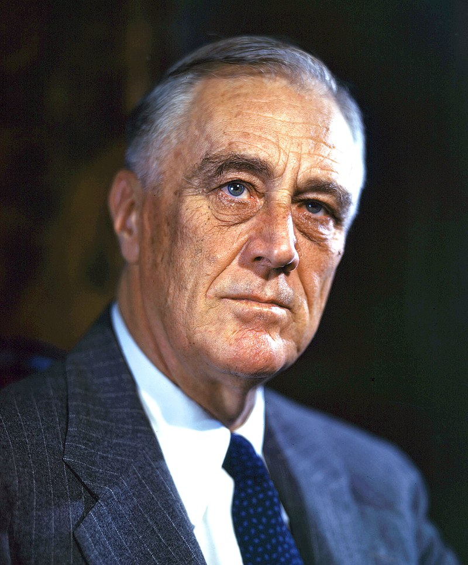

Franklin D. Roosevelt
Franklin Delano Roosevelt, también conocido como Franklin Roosevelt o por sus iniciales FDR, fue un político y abogado estadounidense que ejerció como 32.º presidente de Estados Unidos desde 1933 hasta su muerte en 1945. Miembro del Partido Demócrata, ganó cuatro elecciones presidenciales consecutivas, convirtiéndose en una figura central de los acontecimientos mundiales de la primera mitad del siglo XX y en el presidente que más tiempo ha permanecido en el cargo en la historia del país. En sus dos primeras legislaturas, Roosevelt presidió el gobierno federal durante la mayor parte de la Gran Depresión y puso en marcha un ambicioso programa nacional conocido como New Deal, en respuesta a la peor crisis económica en la historia de Estados Unidos. Líder indiscutible de su partido, forjó la llamada «Coalición del New Deal», que definió las líneas maestras de la política y el liberalismo moderno en Estados Unidos de las tres décadas posteriores. Su tercer y cuarto mandato estuvieron marcados por la entrada de Estados Unidos en la Segunda Guerra Mundial, que terminó apenas unos meses después de su muerte en el cargo.
Primeros años
Franklin Delano Roosevelt nació el 30 de enero de 1882, en Hyde Park, Nueva York. Su padre, James Roosevelt (1828-1900), era un adinerado terrateniente y vicepresidente del ferrocarril de Delaware y Hudson. La familia de Roosevelt había vivido en Nueva York durante más de doscientos años: Claes van Rosenvelt, originalmente de Haarlem en Países Bajos, llegó a Nueva York (entonces llamada Nueva Ámsterdam) hacia 1650. En 1788, Isaac Roosevelt era miembro de la convención del estado de Nueva York, que se celebró en Poughkeepsie y donde se votó para ratificar la constitución de Estados Unidos, una cuestión que llenaba de orgullo a su descendiente Franklin.
En el siglo XVIII la familia Roosevelt de Nueva York se dividió en dos ramas: los Roosevelt de Hyde Park, quienes a finales del siglo XIX eran del Partido Demócrata de los Estados Unidos; y los Roosevelt de Oyster Bay. El presidente Theodore Roosevelt, un republicano del Oyster Bay, era primo en quinto grado de Franklin. A pesar de sus diferencias políticas, las dos ramas siguieron llevándose bien. James Roosevelt conoció a su esposa en una reunión de la familia Roosevelt en Oyster Bay, y Franklin se casó con la sobrina de Theodore.
La madre de Roosevelt, Sara Ann Delano (1854–1941) era descendiente de Phillippe de la Noye, hijo de protestantes franceses hugonotes radicados en Leiden quien emigró en 1621 a Massachusetts. Su padre era Warren Delano, cónsul de Estados Unidos en China, razón por la que pasó su niñez en dicho país. En su viaje de regreso a Estados Unidos los Delano vivieron un tiempo en Valparaíso en casa de sus parientes de Chile. Su madre pertenecía a los Lyman, otra familia de gran tradición en los Estados Unidos. Franklin fue su único hijo, y se convirtió en una madre extremadamente posesiva. Puesto que James era un padre ausente y muy mayor (tenía 54 años cuando nació Franklin), Sara fue la influencia dominante en los primeros años de Franklin. Él mismo, mucho más tarde, indicó a sus amigos que durante toda su vida tuvo miedo de ella.
Roosevelt creció en una atmósfera privilegiada. Aprendió a montar a caballo, tiro, lucha y a jugar al polo y a tenis. Sus frecuentes viajes a Europa permitieron que pudiera hablar alemán y francés. No obstante, el hecho de que su padre fuera demócrata, lo apartó de la mayoría de los miembros de la aristocracia de Hudson Valley. Los Roosevelt creían en el servicio público, y eran lo suficientemente ricos para emplear su tiempo y dinero en tareas filantrópicas.
Roosevelt acudió al Groton School, una residencia de estudiantes de la Iglesia Episcopal en los Estados Unidos de América cercana a Boston. Estaba profundamente influido por su director, Endicott Peabody que predicaba el deber cristiano de ayudar a los menos afortunados y fomentaba que sus alumnos ingresaran en el servicio público. Roosevelt se graduó en Groton en 1900, y posteriormente ingresó en el Harvard College, donde realizó cursos de economía y se graduó en artes en 1904 sin muchos esfuerzos para estudiar. Mientras estaba en Harvard, Theodore Roosevelt se convirtió en presidente, y su vigoroso estilo de gobierno y su celo reformista se convirtieron en el modelo de Franklin. En 1903 conoció a su futura mujer Eleanor Roosevelt, sobrina de Theodore, en una recepción en la Casa Blanca (previamente se habían conocido como niños, pero este fue su primer encuentro serio).
Carrera política
En 1910, Roosevelt se presentó como candidato para el Senado del estado de Nueva York, por el distrito de Hyde Park, el cual no había elegido un demócrata desde 1884. El apellido Roosevelt, el dinero Roosevelt y la corriente demócrata de ese año, lo llevaron a la capital del estado Albany, donde lideró un grupo de reformistas que se opusieron a la maquinaria de Manhattan de Tammany Hall que dominaba al Partido Demócrata del estado. Roosevelt era joven (30 años en 1912), alto, bien parecido y bien hablado, y pronto se convirtió en una figura dentro de los Demócratas de Nueva York. Cuando Woodrow Wilson fue elegido presidente en 1912, Roosevelt asumió el cargo de secretario adjunto de la Marina. En 1914, se presentó a la elección demócrata para el Senado de los Estados Unidos, pero fue duramente derrotado en las primarias por James W. Gerard.
Entre 1913 y 1917, Roosevelt trabajó para expandir la Marina (con la importante oposición de los pacifistas de la Administración, como por ejemplo el Secretario de Estado William Jennings Bryan), y fundó la Reserva de la Marina de los Estados Unidos, para proporcionar una reserva de hombres entrenados para ser movilizados en tiempos de guerra. Wilson envió al Ejército y a los Marines a América Central y al Caribe para que intervinieran en países de dichas zonas. Roosevelt, según su propio testimonio, fue el responsable de redactar la Constitución de Haití de 1915, impuesta por Estados Unidos. Cuando Estados Unidos entró en la Primera Guerra Mundial, en abril de 1917, Roosevelt se convirtió en el más alto administrador de la Marina de los Estados Unidos, ya que el secretario del Ejército, Josephus Daniels, había sido elegido por razones políticas y tan solo desempeñaba funciones representativas.
Roosevelt desarrolló un afecto por el Ejército para toda la vida. Demostró un gran talento administrativo y rápidamente aprendió a negociar con los líderes congresistas y otros departamentos gubernamentales para aprobar presupuestos y conseguir una rápida expansión del Ejército. Se convirtió en un firme defensor del submarino y de las formas para combatir la amenaza de los submarinos alemanes a la flota aliada: propuso crear una barrera de minas a través del mar del Norte desde Noruega a Escocia. En 1918, visitó Inglaterra y Francia para inspeccionar las instalaciones navales estadounidenses y en esa visita coincidió por primera vez con Winston Churchill. Con el fin de la guerra en noviembre de 1918, se encargó de la desmovilización, aunque se opuso al completo desmantelamiento del Ejército.
En 1920, la Convención Nacional Demócrata le eligió como candidato a vicepresidente de los Estados Unidos en la candidatura encabezada por el gobernador de Ohio, James M. Cox. Los oponentes republicanos denunciaron los ocho años de falta de gestión y pidieron un "retorno a la normalización". La candidatura Cox-Roosevelt fue ampliamente derrotada por el republicano Warren Harding. Entonces, Roosevelt se retiró de la práctica legal en Nueva York, pero pocos dudaron que pronto volvería a la carrera política de nuevo.
En la presidencia de los EE.UU
La crisis económica de 1929 y su apuesta por una nueva política, el New Deal o nuevo pacto global, le hizo ganar la confianza de los estadounidenses en las elecciones de 1932 derrotando al candidato republicano Herbert C. Hoover, y convirtiéndose en el presidente de Estados Unidos de América por el Partido Demócrata.
Su política económica New Deal consistió en estimular el gasto público mediante la inversión en infraestructuras; durante sus primeros años de gobierno ejecutó todo tipo de proyectos como hidroeléctricas, carreteras, escuelas y en general todo tipo de obras públicas, modernizando significativamente el país. El New Deal no resolvió la crisis, que perduró hasta que Estados Unidos movilizó su economía con la Segunda Guerra Mundial, momento en el que el número de parados seguía siendo alto. En cambio, su éxito es innegable en el plano social. La política llevada por el presidente Franklin D. Roosevelt cambió el país mediante una revolución, como él mismo expresó: "si es una revolución, es pacífica, llevada a cabo sin violencia, sin el derrumbe del imperio de la ley y sin la negación del derecho equitativo de todo individuo o clase social" (palabras del mismo Franklin D. Roosevelt escritas en su libro En Marcha [The test of our progress]). Por otra parte, los programas del nuevo pacto global o New Deal eran abiertamente experimentales, manifiestamente perfectibles, y, dados los costes de este proceso, se podría haber preferido un programa de cambio más completo. Sin embargo, el carácter imperfecto del New Deal permitió una crítica constructiva y una reflexión más pausada que abrió la vía a un mejoramiento de la democracia estadounidense en los años siguientes y que perdura hasta la actualidad. En materia sindical, la adopción de la ley Wagner permitió hacer de los sindicatos unos colectivos poderosos.
En febrero de 1933, Roosevelt fue objetivo de un intento de asesinato. Giuseppe Zangara, que manifestó su «odio hacia todos los dirigentes», intentó dispararle. Una atenta espectadora, Lillian Cross, le golpeó en el brazo con su bolso cuando apuntaba a Roosevelt. Al disparar el arma, en su lugar hirió de muerte al por entonces alcalde de Chicago, Anton Cermak, sentado al lado de Roosevelt.
Durante su mandato potenció la política exterior luchando por conseguir la primacía mundial estadounidense, estableciendo relaciones diplomáticas con la Unión Soviética en 1933. Como respuesta a la amenaza de la Alemania de Hitler, puso en marcha una serie de medidas preventivas (rearme, economía de guerra, alineación con las potencias occidentales) que prepararon a su país para un posible enfrentamiento armado.
A pesar de no participar en la guerra directamente, estableció un fluido abastecimiento de armas y pertrechos de guerra para sus aliados y, en cambio impidió iguales condiciones para las potencias del Eje, como por ejemplo el bloqueo de hidrocarburos hacia Japón.
En la Segunda Guerra Mundial
Reelegido en las elecciones de 1940, se convirtió así en el único presidente estadounidense en servir más de dos mandatos. Con una Segunda Guerra Mundial en ciernes, Estados Unidos se declaró oficialmente neutral, pero Roosevelt proporcionó un fuente apoyo diplomático a Reino Unido, la República de China y desde 1941 a la Unión Soviética. Tras el ataque japonés a Pearl Harbor el 7 de diciembre de 1941, el Congreso declaró la guerra a Japón, tras un célebre discurso de Roosevelt donde definió el ataque japonés como «una fecha que vivirá en la infamia»; días después, el Congreso también aprobó la declaración de guerra a Alemania e Italia.
Asistido por su ayudante, Harry Hopkins y con un extraordinario apoyo del pueblo estadounidense, trabajó en estrecha colaboración con el primer ministro británico, Winston Churchill, el líder soviético Iósif Stalin y el generalísimo chino Chiang Kai-shek para la derrota de las potencias del Eje. Roosevelt encabezó la movilización de la economía estadounidense para apoyar el esfuerzo de guerra y estableció la estrategia de «Europa primero», haciendo de la derrota militar de Alemania una prioridad, incluso por delante de la Japón. A través del Proyecto Manhattan autorizó el desarrollo de la primera bomba nuclear de la historia y trabajó junto a los líderes de los Aliados para sentar las bases de la Organización de las Naciones Unidas y otras instituciones que guiarían las relaciones internacionales de posguerra. Roosevelt resultó de nuevo elegido en las elecciones de 1944, pero para entonces su salud era muy frágil a causa del rápido declive sufrido en los años de guerra. Murió en abril de 1945, menos de tres meses después de jurar por cuarta vez como presidente. Las potencias del Eje se rindieron solo unos meses después, durante la presidencia de su sucesor, Harry Truman.
Aunque su figura no está exenta de críticas notables, por lo general los historiadores y académicos coinciden en señalarle como uno de los tres presidentes más importantes y valorados de la historia del país, junto a George Washington y Abraham Lincoln.